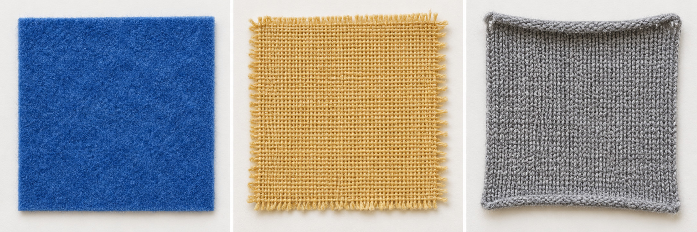

Design and Technology · LAUNCH · Spring 1 Week 4
Choose fabric for a useful pouch
Thursday 28 January 2027 · P1 · 40 minutes
Weekly outcome: TEXTILES: choose fabric and technique for a purpose.
I can choose fabric and a joining method for a pouch and explain how they suit its job.
Today I can
- I can link a fabric property to the pouch purpose.
- I can compare joining methods and choose one.
- I can record my own choice and a reason for next week.
In your book. Keep your own design decision and source. Plan in any language.
Theme: Resilience & Change. Today we choose. Actual textile making comes later.
A pouch with a job
0–5 minutesRead or hear the purpose.
The pouch must hold three 60 mm by 80 mm cards.
Today we choose. Next week we measure and join.
Design a small reusable pouch for three paper prompt cards. Each card is 60 mm wide and 80 mm high. Hold the cards upright. Join the sides and bottom; leave the top open. The pouch should be comfortable to handle, with no loose sharp parts.
Default plan: two fabric rectangles, each 100 mm wide and 120 mm high. This is 10 cm by 12 cm. Plan a seam line 10 mm inside the left, right and bottom edges. Leave the top open. These are written measurements, not a printed cutting template.
Say and do
Show three actual cards if available, or describe their written size. Read the purpose and distinguish a useful item from decoration alone. Ask who will use it and what it must hold. Explain the top stays open. No personal possessions need to be shown. Use the last minute for a calm settling pause.
Check and response
Ask what must be joined and what stays open. Expect sides and bottom joined, top open. Re-read the brief if the opening is unclear.
Materials-free route
With no fabric, tools, paper or printer, hear the purpose and model descriptions. Point, speak or sign a choice. Explain one property and one reason. Rehearse the plan with empty hands. An adult records exact confirmed words when a recording method is available. Mark transcription pending until it exists. Keep actual sample tests and textile making pending.
What can a fabric do
5–8 minutesCompare stretch, cut edge and firmness.
Use actual samples only with adult approval.
No samples means model information, not a test.

| Generic fabric | Model property | Link to purpose |
|---|---|---|
| Non-fraying felt | Model: fairly firm, little stretch, cut edge does not fray. | May support the cards and avoid a fraying edge. Test the actual sample. |
| Woven cotton | Model: folds easily, little stretch across the weave, cut edge may fray. | May need edge finishing and support to keep its shape. Test the actual sample. |
| Stretch knit | Model: stretches, may curl at a cut edge, shape can change when pulled. | May be harder to measure and hold steady. Test the actual sample. |
Choose the source you really used
Model information selected. The descriptions support a planning prediction; no actual sample test is claimed.
Choosing a button does not perform a test. Record your actual observation if a sample was tested.
Say and do
Offer generic felt, woven cotton and stretch knit samples, or the labelled model photo and notes. Model gentle handling. Real samples may differ from the model descriptions. Read the three property checks. Choose one actual sample test if available; stop before any sharp tool is needed.
Check and response
Ask: Is a photo a test of your sample? No. Name actual sample evidence separately from model information.
Materials-free route
With no fabric, tools, paper or printer, hear the purpose and model descriptions. Point, speak or sign a choice. Explain one property and one reason. Rehearse the plan with empty hands. An adult records exact confirmed words when a recording method is available. Mark transcription pending until it exists. Keep actual sample tests and textile making pending.
A choice with a reason
8–13 minutesWatch a model choice linked to the purpose.
Compare stitching, bonding and a fastening.
Keep the top open.
1 Property
The felt model is fairly firm.
2 Effect
Firm fabric may help support the cards.
3 Decision
I choose felt and hand running stitch, then check the actual sample before making.
This is an adult model. Your decision needs your own reason.
Say and do
Model: I choose the felt model and hand running stitch because firm fabric may support the cards and stitch joins sides and bottom. Point to two rectangles 100 by 120 mm and the 10 mm side and bottom seam lines. This is a design plan, not a cutting demonstration. Compare adhesive approval and full cure against controlled needle use. A fastening closes an opening; it does not join our sides and bottom. Fade the example by leaving the final reason for the pupil to finish.
Check and response
Ask why a button alone is insufficient. Expect it does not join the sides and bottom. A quiz answer never authorises tool use.
Materials-free route
With no fabric, tools, paper or printer, hear the purpose and model descriptions. Point, speak or sign a choice. Explain one property and one reason. Rehearse the plan with empty hands. An adult records exact confirmed words when a recording method is available. Mark transcription pending until it exists. Keep actual sample tests and textile making pending.
Compare a second choice
13–20 minutesCould woven cotton suit this job?
Link a property to an effect.
Record a real test or name the model source.
Compare joins and fastenings
| Method | Job | Control |
|---|---|---|
| Hand running stitch | Small passes through both fabric layers join the sides and bottom. | Needs an approved needle, thread and close adult supervision. Default route for this pouch. |
| Fabric adhesive bonding | A suitable adhesive may join the layers. | Adult must approve the actual label, fabric use and method. Wait for full cure before testing. No guessed cure time, heat or solvents. |
| Button and loop or ties | A fastening can close an opening. | It does not replace joined sides and bottom. Our open-top pouch needs no fastening. Any change needs a revised approved design. |
Our open-top pouch needs no fastening.
Say and do
Compare felt and woven cotton together. A softer fabric may need support; a fraying edge may need finishing. Accept a different conclusion if it follows an actual sample result and an approved design. Use the frame property, effect, decision. An adult can read back a pupil explanation. No invented tests. Pupils may rehearse in any language or point to one property row.
Check and response
Ask for a property and a reason tied to the cards. A colour preference can be included, but it does not replace evidence about holding the cards.
Materials-free route
With no fabric, tools, paper or printer, hear the purpose and model descriptions. Point, speak or sign a choice. Explain one property and one reason. Rehearse the plan with empty hands. An adult records exact confirmed words when a recording method is available. Mark transcription pending until it exists. Keep actual sample tests and textile making pending.
A join or a fastening
20–25 minutesA button closes the top. Does it join both sides and bottom?
Choose yes, no, or only if it looks strong.
Explain the open-top design.
Parallel check
An adhesive join feels dry. May you test it before the full label cure is complete?
No. Adult label approval and full cure are required before testing. A dry surface alone does not prove full cure.
Say and do
Hinge answer is no. A fastening has a different job. If any pupil confuses the two, use two pieces or empty hands to point to sides, bottom and top. Parallel check: adhesive feels dry; may you test the join before the label cure is complete? No. Adult label approval and full cure are required. Recheck after reteaching.
Check and response
Move on when the pupil distinguishes joining from closing and explains one control for the chosen technique. If not, use Supported with the taught hand-stitch model and adult-led comparison.
Materials-free route
With no fabric, tools, paper or printer, hear the purpose and model descriptions. Point, speak or sign a choice. Explain one property and one reason. Rehearse the plan with empty hands. An adult records exact confirmed words when a recording method is available. Mark transcription pending until it exists. Keep actual sample tests and textile making pending.
My design decision
25–33 minutesIn your book, choose a fabric and joining method.
Give a property and a reason linked to the cards.
Sketch two 100 mm by 120 mm pieces and name the 10 mm seam lines.
Record actual sample testing or model information used.
Supported
- Use the felt model and hand running stitch, or choose after hearing two options.
- Point to one helpful property. Say how it helps hold the cards.
- Use the written dimensions: two pieces 100 mm by 120 mm, 10 mm seam lines.
- Say your own reason. Name a real test or model information.
Standard
- Compare two fabrics using stretch, edge and firmness.
- Choose a fabric and join. Link one property to the pouch purpose.
- Record the two piece sizes and three seam lines. Keep the top open.
- Name your evidence source and one change or question.
Stretch
- Complete the core design decision first.
- Compare all three fabrics and two joining methods.
- Explain a trade-off between firmness, stretch, edge finish and safe making.
- Justify a rejected option and a useful later test. Do not claim a test you have not done.
Fabric + property + effect + join + purpose reason + honest source. Keep the two piece sizes and three seam lines.
Say and do
Use one route and the design decision prompts. The core decision may use model information honestly. Default felt and running stitch is available; the pupil still gives an own-word reason. A revised fabric or method needs adult review of dimensions, joining and safe access before Week 5. Use the last minute to check and organise the record.
Check and response
Check fabric, source of property evidence, join, purpose reason and dimensions. Scribe exact words and read back where needed. Missing tests remain pending; a valid reason based on model information can still show choosing.
Materials-free route
With no fabric, tools, paper or printer, hear the purpose and model descriptions. Point, speak or sign a choice. Explain one property and one reason. Rehearse the plan with empty hands. An adult records exact confirmed words when a recording method is available. Mark transcription pending until it exists. Keep actual sample tests and textile making pending.
Check the choice against the job
33–37 minutesDoes the design hold the three cards?
Are the sides and bottom joined and the top open?
Keep one useful change or question.
Safety and evidence
Wait for adult approval before handling needles, scissors or adhesive. Use only the agreed tools and supervision.
Count needles out and back into a safe container. Never put pins or needles in your mouth or leave them in a product.
For a pause, put tools down in the agreed place. Keep fingers clear of a needle exit point. Tell the adult about a lost or damaged tool.
Use adhesive only after the adult checks the actual label and fabric. Follow the full cure instructions before testing. No heat, irons or solvent route is taught.
Today is choosing and planning. A model picture or empty-hand rehearsal does not prove textile testing or making.
Say and do
Offer a private adult check or a peer comment by consent. Review the plan rather than claiming the unmade item passed a load test. Confirm the actual design and any access changes for Week 5. The adult approves tools separately. Use the last minute for calm tidy and return any sample or tool.
Check and response
Pupil confirms their final choice and corrects any scribed words. Mark adult design review approved or pending. Record only actions that occurred.
Materials-free route
With no fabric, tools, paper or printer, hear the purpose and model descriptions. Point, speak or sign a choice. Explain one property and one reason. Rehearse the plan with empty hands. An adult records exact confirmed words when a recording method is available. Mark transcription pending until it exists. Keep actual sample tests and textile making pending.
My reason for the next maker
37–40 minutesI choose ___ because ___.
I will join the sides and bottom using ___.
My evidence is an actual sample result or model information.
Type instead
Use your book first. You may speak, sign or direct an adult. Keep personal health details out of these boxes. Saving creates a local text record and uploads nothing.
This page does not collect files, photos or private school records.
Say and do
Ask for a short pupil-owned choice and reason, privately if preferred. Keep the book location and actual support. Return and count any needles if they were demonstrated. Next week retrieves this exact design; an unfinished decision remains marked unfinished.
Check and response
The final evidence is a design decision with a purpose-linked reason and honest source label. It is not a claim of making or testing an entire pouch.
Materials-free route
With no fabric, tools, paper or printer, hear the purpose and model descriptions. Point, speak or sign a choice. Explain one property and one reason. Rehearse the plan with empty hands. An adult records exact confirmed words when a recording method is available. Mark transcription pending until it exists. Keep actual sample tests and textile making pending.